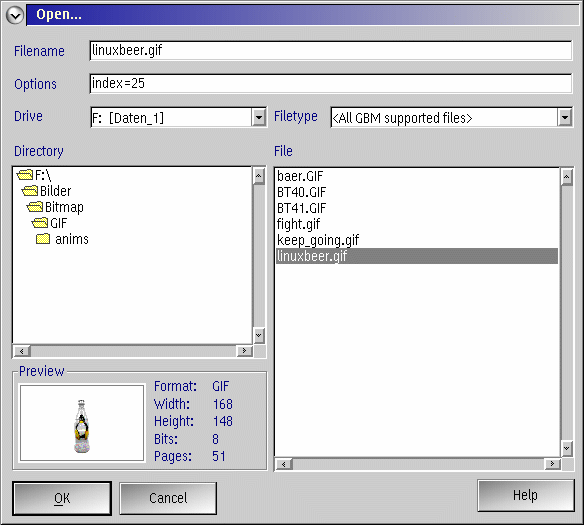

GBMDLG is a DLL which programs may use to select bitmap filenames to load or save. Includes IPF help applicable to the process, and which documents the formats and levels of support given by GBM.
GBMDLG is used by GBMV2 but can be easily used by developers of other programs.
Just unzip the GBMOS2PM package and copy the gbmdlg.dll
and gbmdlg.hlp files into the directory required by the
application that can make use of it. Examples of such applications
are GBMV2 and Mesa2.
If you've already got the GBMOS2 package installed into a directory, you might as well put these new files in there too.
GBMV2 needs gbm.dll which is part of the GBMOS2 package.
Either copy it into the same directory as the application (e.g. gbmv2.exe)
or to a directory defined in LIBPATH in the CONFIG.SYS.
| Bitmap file dialog box: |  |